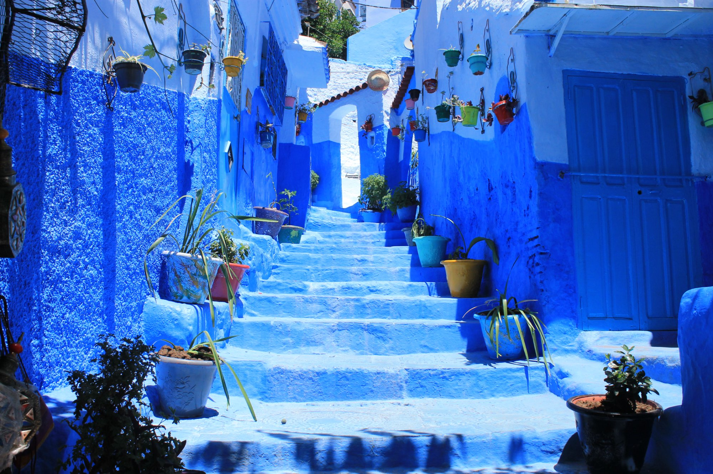
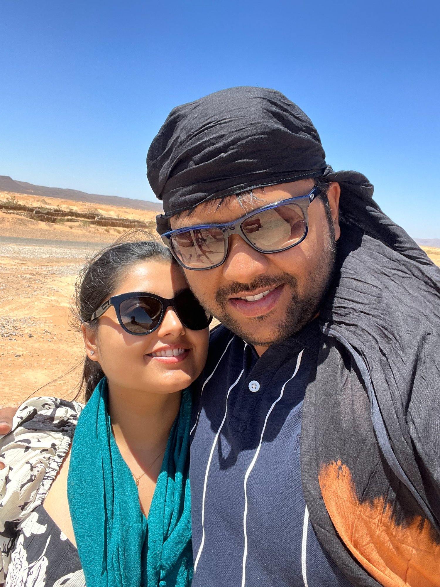
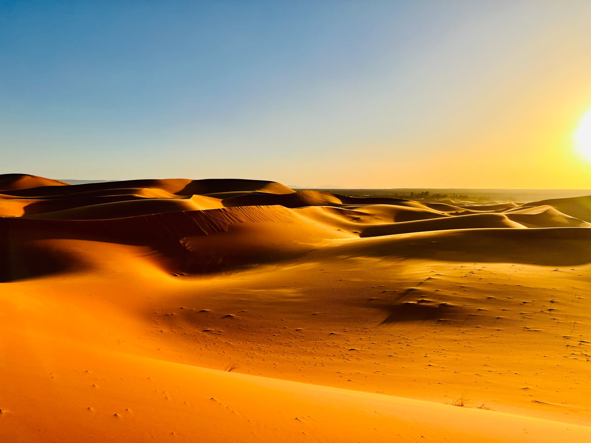
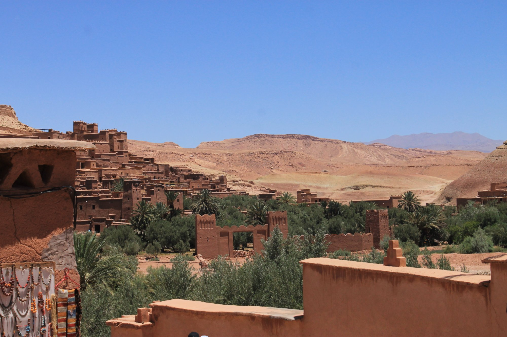
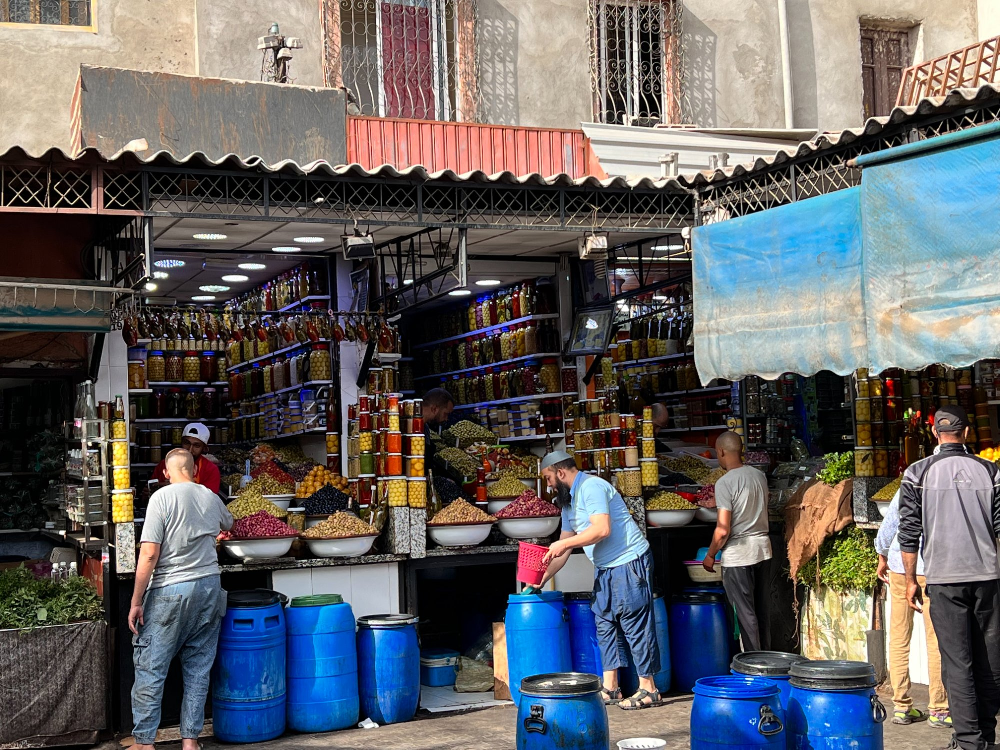

Morocco — A Happy Haze
Summer 2022
It was the summer of 2022 and we had just gotten married. Morocco was an impulsive decision. Egypt, Europe and the other common touristy places were too expensive, the South East of Asia was too far for Devoja, and the US, too familiar. I was a young faculty in India, and had somehow managed to get a paper selected for a conference in Miami. The plan was to go there first, together, and then after a couple of days in Chicago, which we still call our second home, off to Morocco.
We booked a travel agent while the inertia of the impulse lasted. Too much thinking and searching for a perfect destination often times ruin all the fun. In retrospect, if we had not impulse-booked, we would have missed out on one of the best trips of our lives. By the way, our travel agent booked Air Canada flights first and we had to cancel them because we could not arrange for transit visas for Canada. Later, we got our own tickets without the Canada transit requirement. Impulse actions are not stupidity-proof!
The Casablanca airport seemed shabby, making us question our decision — "Is this what we came for!". We checked into a hotel and decided to give Bogart and Bergman's Casablanca a fair chance. And, we fell in love within an hour. The city is an eclectic mixture of a deeply rooted Arab culture and French modernity inherited from its recent colonial past. We had our first meal of cous cous and tajine. The restaurant was decorated with gorgeous rugs, traditional coffee dallahs, and warm yellow lighting. The spice palette seemed distinct, different, yet close to home. This meal was one of the best we had in this trip.

Geographically, the country looks like a skull-cap of Africa bordered by both the Mediterranean and the Atlantic. Since most of our trip was following the coastline our Moroccan summer was warm, yet perfect to be out and about. We finished our first day with a glass of orange juice, or as they call it jus-de-orange. Tired from a long flight, we slept through our first debrief meeting scheduled for late evening with our tour guide Mohamed.
Writing this memoir, I realize that parts of the trip has become a happy haze in my memory. Part of me regrets not taking this up earlier, when all the events were fresh in my memory, while the other part is enjoying digging through the dust and seeking the treasures.
The next day started with a reprimand from our punctual tour guide for missing the session last night. We met our tour group members: a Pakistani family settled in Canada, husband, wife and two children, a British elderly couple, retired and traveling the world, and a young British couple who mostly kept to themselves. We made friends with the Pakistani family and the elderly British couple. I remember an incident where the British man was surprised to find out that one could buy single pieces of cigarettes from departmental stores in Morocco, and almost ran to tell his wife of this very special facility during one of our pit stops. Surely this is an impossibility in England. Another thing that bothered him was Oriental style toilets, which were almost everywhere in Morocco. I remember seeing him coming out of a bathroom all disappointed — "It's a **** hole on the floor!!"

That day was blocked for a city tour of Casablanca, by now a beauty to behold, with its Art Deco style buildings and an old city Arab suq. What was new to us on that day was the panoramic Atlantic view from the Kasbah of the Oudayas and the Hassan II mosque, a white marvel built on land reclaimed from the Atlantic. We ended our day at the city of Tangier, a port city on the Strait of Gibraltar.
At the Tangier hotel Mohamed told us that the land mass we could see from our hotel window, across the strait was actually Portugal. Insignificant as it may sound, I could not help but ponder about a world map. Where exactly were we on it — Africa!! Where it all started — Kolkata, about a time less than a decade ago, when Africa was only a distant dream, a dream that was familiarized by Bibhutibhushan's Shankar. And then, how life happened! The thought made me wonder about how new phases unravel as one moves along, and how time washes off everything that comes on its way.
Next day's highlight was the blue city of Chefchaouen. Jodhpur, as I have heard from people who have been there, bears resemblance to this city. But I have never been to Jodhpur. I was awestruck by the beauty of the city. Every house was similarly colored. The reason for the blue color in both the cities is probably the same — it helped keep the houses cool from the desert heat. There are other theories as well: the most popular being a Jewish tradition from the 1930s which relates the blue color to the sky and heaven. After a sumptuous lunch with local dishes, with a generous serving of dates and olives, we had a cup of sugary mint tea, almost a national drink of Morocco. The cafes in Morocco smell of coffee and cigarettes. The country is yet to graduate from smoking, and everyone seems to enjoy their occasional cigarette.
Next stop was Fez: the intellectual and religious capital of the country. On our way to Fez we made a brief stop at Rabat where the Atlantic and the Mediterranean meet each other, but do not mix. They bring their distinct shades of blue with them, and at Rabat, try to win each other over in their own oceany ways. At Fez, we had a day long tour of the old city — a walking city, constructed at least a thousand years ago. The roads could only accommodate traditional hand-drawn carts or bullock carts at best. There were dark alleyways and brighter squares, blacksmiths with traditional tools repairing utensils. The highlight of the old city was the Medersas, an ancient school of Koranic studies. The building had a picturesque courtyard and architecture that has its parallels in the Mughal buildings in India. We had our lunch in a restaurant within the old city itself — the house of a noble family converted to an eatery serving traditional Moroccan cuisine. We ended our old city tour with a tannery visit, which I do not recommend, especially after lunch!
With Fez, we were moving inland already, away from the oceans. The temperature was climbing and the great Sahara was near. We were a bit worried about the heat and by then I had gotten a sunburn on my feet because of my uncovered open-toe slippers. It was time to look like an Arab as well. We bought scarfs to cover our heads, a bit later than we should have. The landscape had changed to being rocky, barren, and dusty. However, there were vast stretches of palm and date trees, oases in the desert. They provided cool shades to tired travelers in the past who would travel across the desert to Timbuktu, an ancient market place located in present day Mali. We entered the desert on 4X4 vehicles and we actually saw milestones mentioning the distance to Timbuktu from Erfoud, our entry-point to the great Sahara.
The Sahara is orange! It is nothing like you could ever imagine. The first sight of the dunes would give you goosebumps — no matter how much you have read about them before. We rode on camels to a sunset point. I was lucky to get an extremely well-behaved camel, unlike many of our co-travelers. We spent some time on the dunes and experienced changing colors of the desert as the sun went down. We slept in tents that night and enjoyed local dance performance, and as usual, great food.

The rocky and dusty parts of Morocco had more to offer. Next, we visited the gorges of Todgha and Ait-Ben-Haddou. The latter was a fortification constructed before the 7th century AD. Historians are unsure about who might have constructed it, but modern Hollywood films have made full use of the landscape and the unique ancient structures of the place. The famous film, Gladiator, was shot at this location.
Our final destination was the city of Marrakech. The city is full of colors, roadside cafes, and has a square that sells carpets and olives and hand-painted bowls, and much more, including performances by snake-charmers, who may insist for a tip, even if you show no interest in their art form. Tipping is common in Morocco — our guide Mohamed used to collect a small token amount every morning and paid the tips on our behalf. This was a relief!

Marrakech is where Devoja started our collection of hand-painted bowls, one from every country we visit. Our half-day city tour was converted to a full day bazaar adventure with Devoja bargaining with local traders, offering prices which, I am sure, were lower than the product's cost, and walking away in anticipation of a call back. My interventions were always met with a frown, sometimes even from the shopkeepers! Unable to keep up, I helped myself with some spicy green and red olives, and packed some for home. We bought a small blue and white geometric rug from this bazaar which adorns our Hyderabad bedroom, and brings back memories of that day, that suq, that smell, and that city!
We stayed at Hotel Palm Plaza, across the street from the La Mamounia hotel, where Winston Churchill used to stay during his visits. He famously loved Marrakech, calling it the most lovely spot in the world, and a premier destination for his winter painting holidays starting in 1935.
One afternoon, when we were sitting in a cafe after a long walk across town, we heard a local musician playing Hindi songs on a mandolin. We were surprised to know that Indian films were so popular in Morocco, to the extent that the movie theatres go full house when new Hindi movies make their way to town. The entire youth knows of Shah Rukh Khan, adores him, and imitates his character in popular films. Cinema has brought our civilizations closer, breaking barriers of language, geography, and culture.
By then, we were craving for home; in my opinion, a signal of a trip well spent. It reenergizes you to get back to work with memories of joyous times. Also, by then, I had made up my mind to come back to Morocco again. A few weeks back I watched Lonely Planet, a Netflix movie featuring Laura Dern, and starting to coax my wife again.

Not all the memories of a trip even as beautiful as Morocco stays forever. What remains is a happy haze; a cloud in which you can put your head into and pen down a few words one evening, over a glass of single malt!